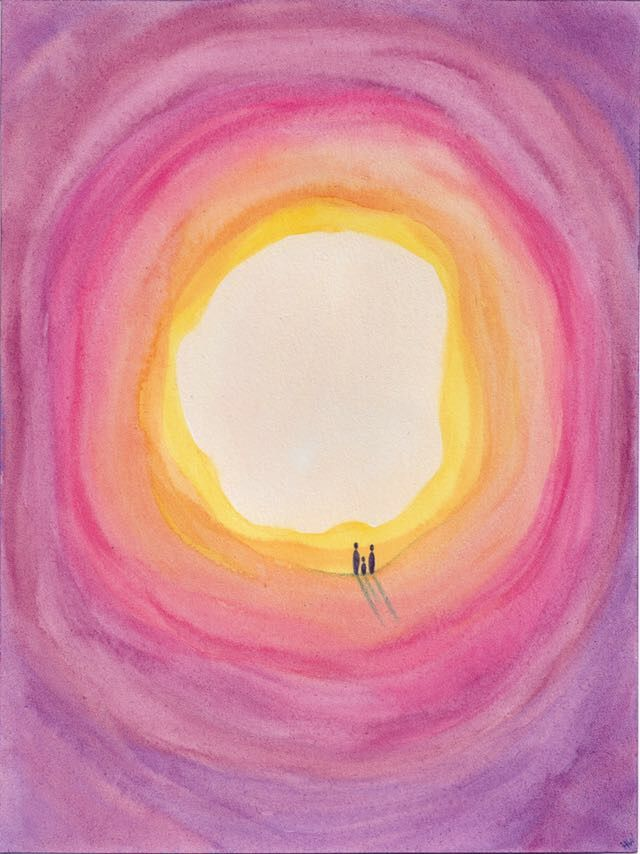
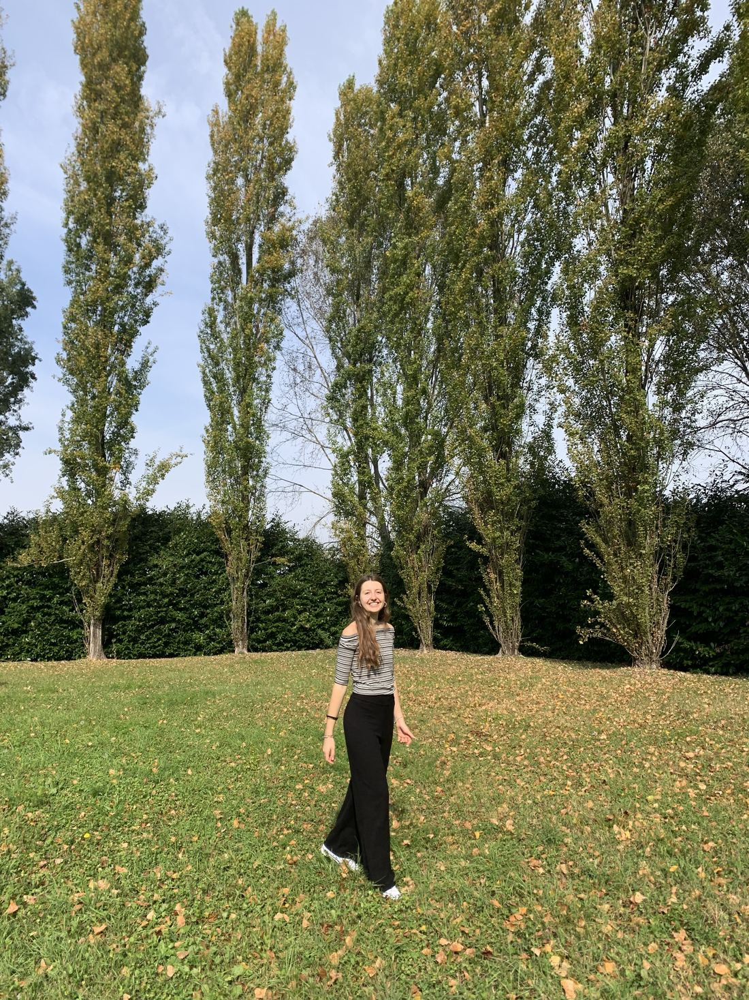
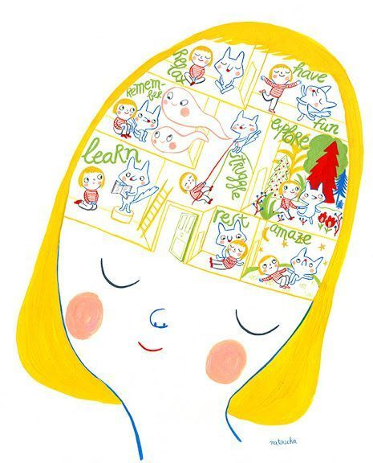

02 — Quién soy
Soy Sara, psicóloga sanitaria
Me considero una persona curiosa y en constante proceso de aprendizaje. Me interesa comprender a las personas y el mundo que las rodea, manteniendo una mirada abierta, responsable y respetuosa hacia cada historia y cada contexto.
En terapia, entiendo que no existe una única forma de vivir ni de afrontar las dificultades. Por eso, considero fundamental crear un espacio seguro y de confianza en el que explorar preocupaciones y avanzar hacia lo que realmente es importante para la persona.
Nº de colegiada: AN 12817
03 — Cómo trabajo
Un espacio para mirar con calma
Cada proceso empieza por entender qué te trae hasta aquí y qué te gustaría que fuese distinto. A partir de ahí construimos juntas un camino que tenga sentido para ti, sin prisa y sin recetas cerradas.
-
Primer contacto
Una toma de contacto para conocernos, contarme qué te preocupa y resolver tus dudas antes de decidir nada.
-
Entender lo que pasa
Dedicamos las primeras sesiones a comprender tu historia y tu contexto, y a ordenar juntas lo que hoy se vive como confuso.
-
Avanzar hacia lo que importa
Trabajamos con herramientas ajustadas a tu momento, orientadas a lo que de verdad es valioso para ti en tu vida.

04 — En qué puedo ayudarte
No hace falta estar muy mal para pedir ayuda
-
Ansiedad y preocupación
Inquietud constante, anticipación, dificultades para parar o para dormir.
-
Estado de ánimo
Tristeza sostenida, desánimo, pérdida de ganas o de sentido en el día a día.
-
Duelo y pérdidas
Acompañamiento ante la muerte de un ser querido, rupturas u otras despedidas.
-
Autoestima e identidad
Autoexigencia, inseguridad, la sensación de no saber muy bien quién eres.
-
Relaciones
Vínculos familiares, de pareja o de amistad que duelen o que cuesta sostener.
-
Momentos de cambio
Decisiones vitales, mudanzas, maternidades, duelos migratorios, nuevas etapas.
05 — Contacto
¿Damos el primer paso?
Escríbeme y hablamos sin compromiso de lo que necesitas y de cómo podemos trabajarlo.
- saramontecatine.psi@gmail.com
- Terapia presencial en Sevilla y online